Fractal maze project screenshots
Actual local captures from October 9, 2026. Select an image to inspect it at full size. The project inventory records the formats, working features, and remaining implementation tasks.
The three Orel corridor players
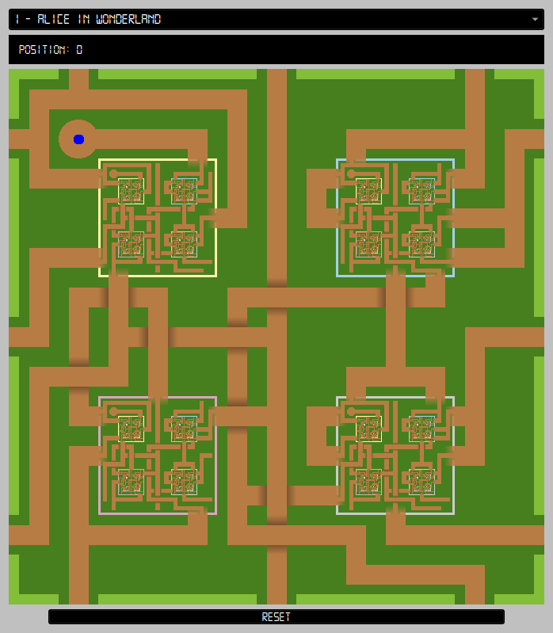
Orel Python player Nine mazes. Circular start pads, faded gates, deeper recursive detail, and animated camera transitions.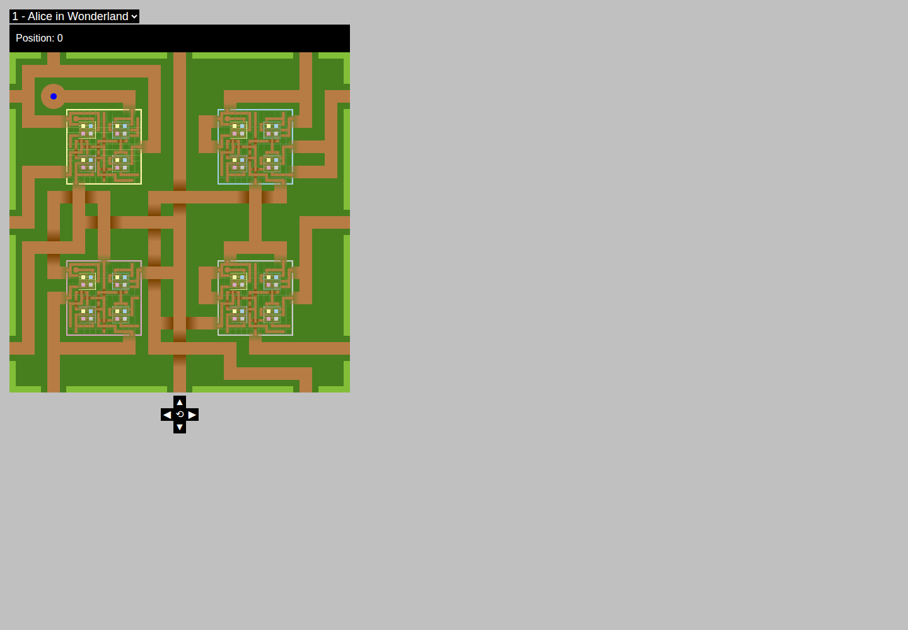
Orel web player Four mazes. Compact web port with recursively scaled HTML tiles.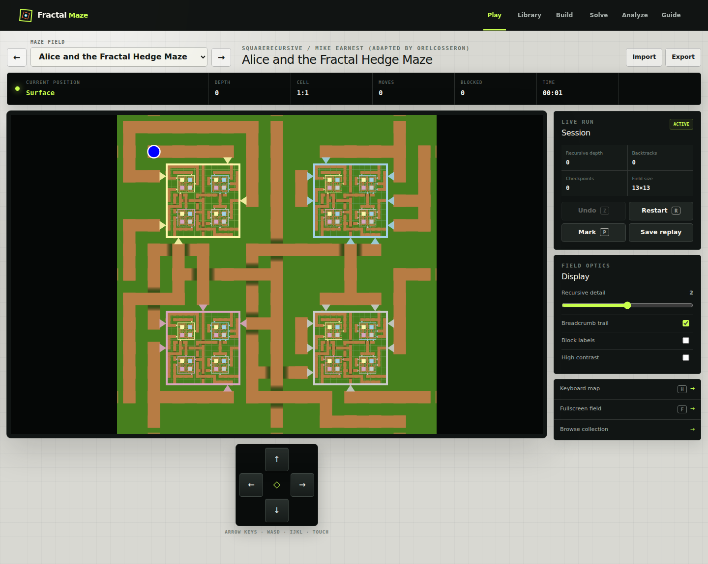
Current custom app Nine mazes plus editor, replay, solver, and import tools. Gate drawing and camera behavior differ from the reference.
Other maze construction and interaction models
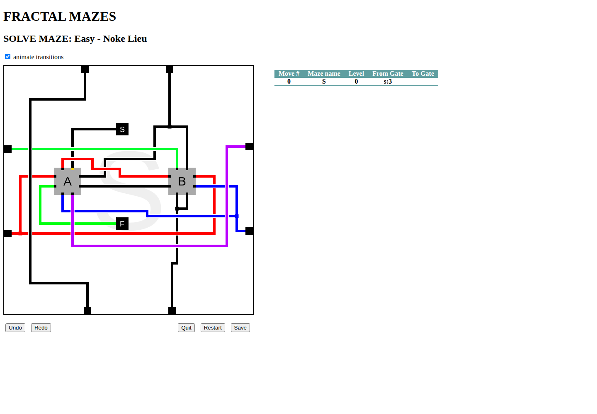
Amurielagi player and editor Twelve supplied mazes. Colored path geometry, named gates, nested submazes, and a gate traversal table.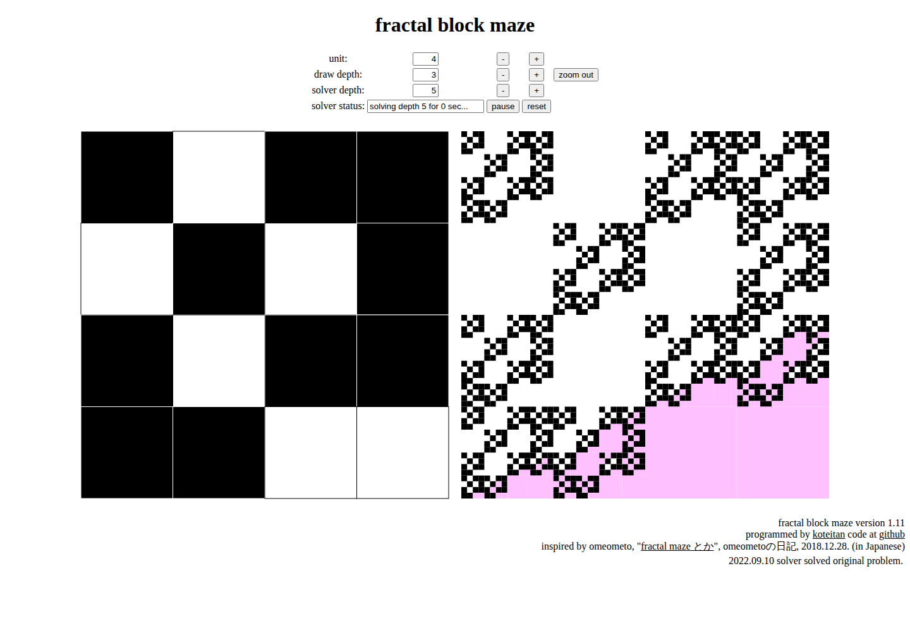
Koteitan fractal block maze Pattern editing, black-cell substitution, recursive zoom, and iterative-depth search visualization.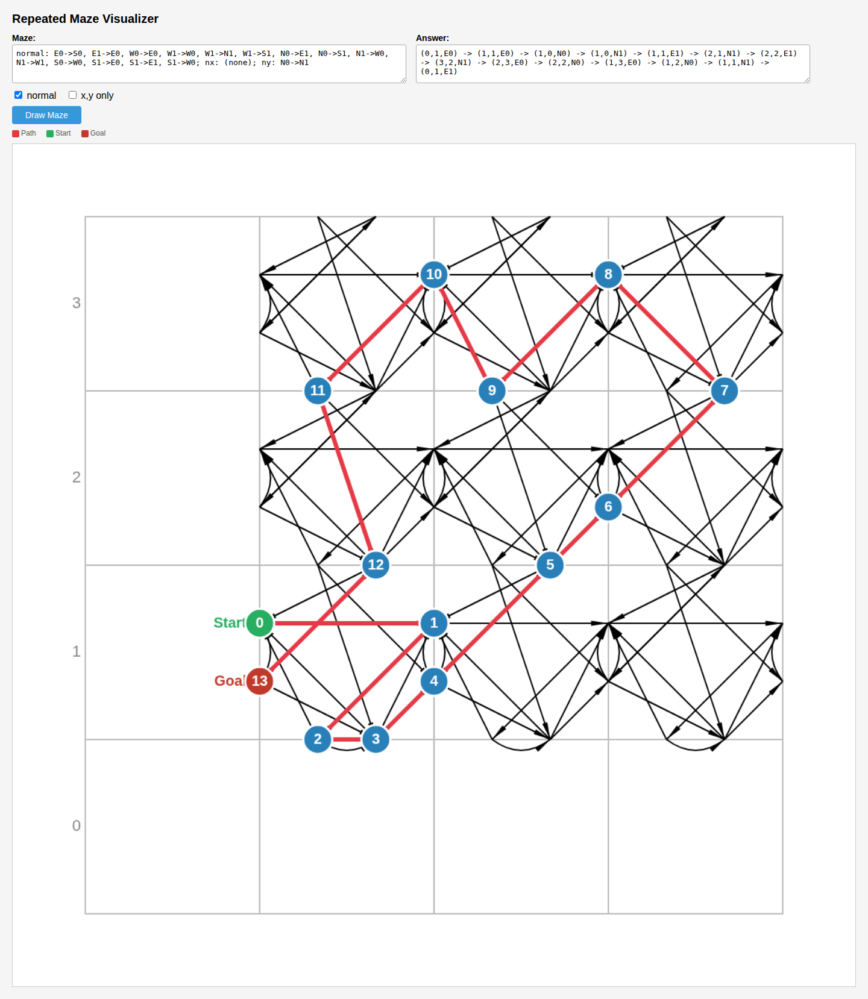
Koteitan repeated maze Directed terminals on repeated coordinate blocks. Separate CLI solver and maze generator.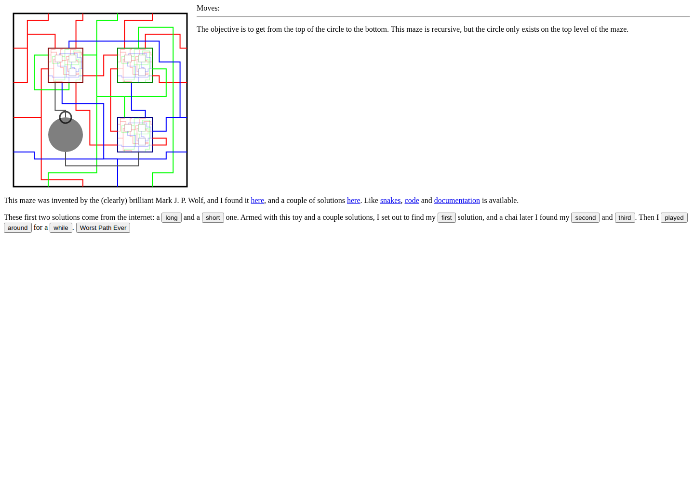
Sparecycles Wolf player Canvas wire maze with supplied solutions and partial path display.Early collection scaffold Placeholder renderer/reset logic; a JSON-shape error prevents the collection loading.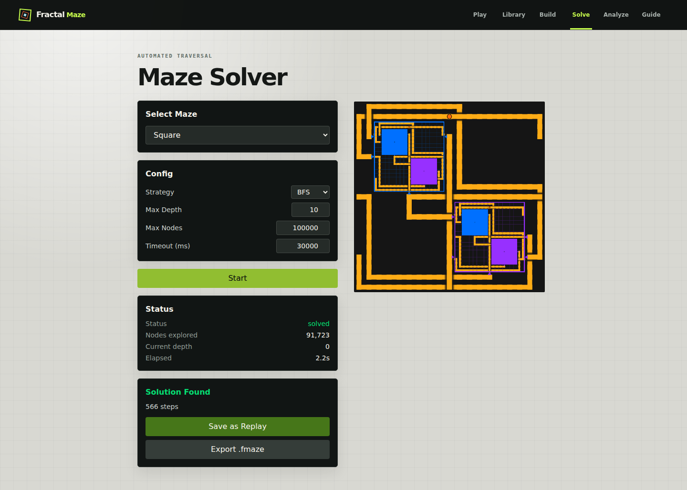
Working custom square solver BFS found a 566-step Square solution. The C++ solver, C repeated solver, and five Python PDA examples also ran successfully.
Concrete custom-app gaps
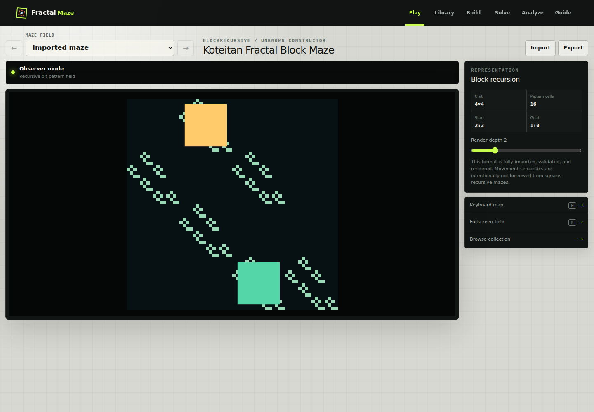
Different block construction The same Koteitan pattern expands open cells in this renderer, while the original expands black cells.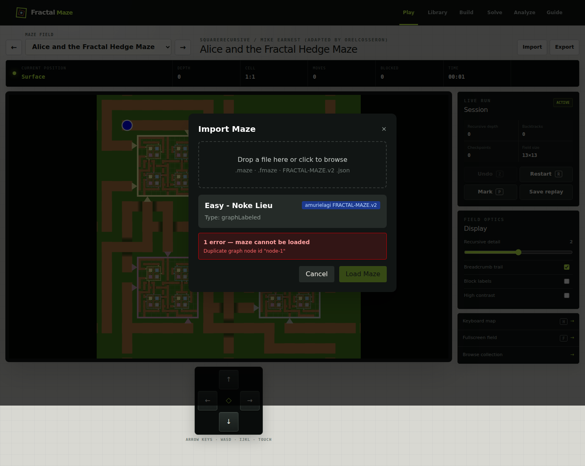
Real Amurielagi import fails The bundled export is rejected for duplicate node IDs. Path geometry and connections also need a faithful representation.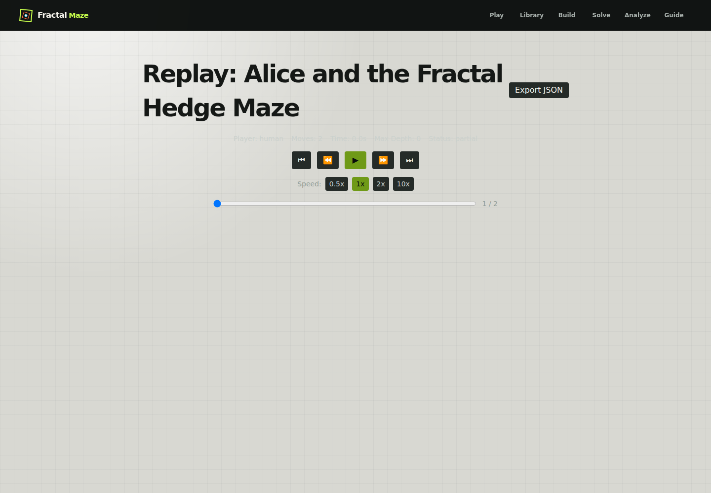
Replay has no maze A saved two-move Alice run reopens with controls but no canvas because its maze definition is unavailable.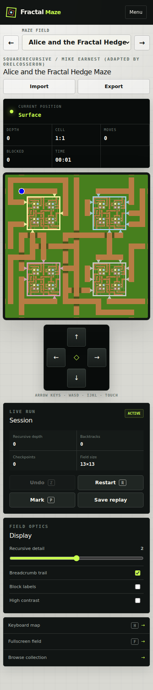
Mobile controls need space At 390 by 844, movement controls begin below the initial viewport.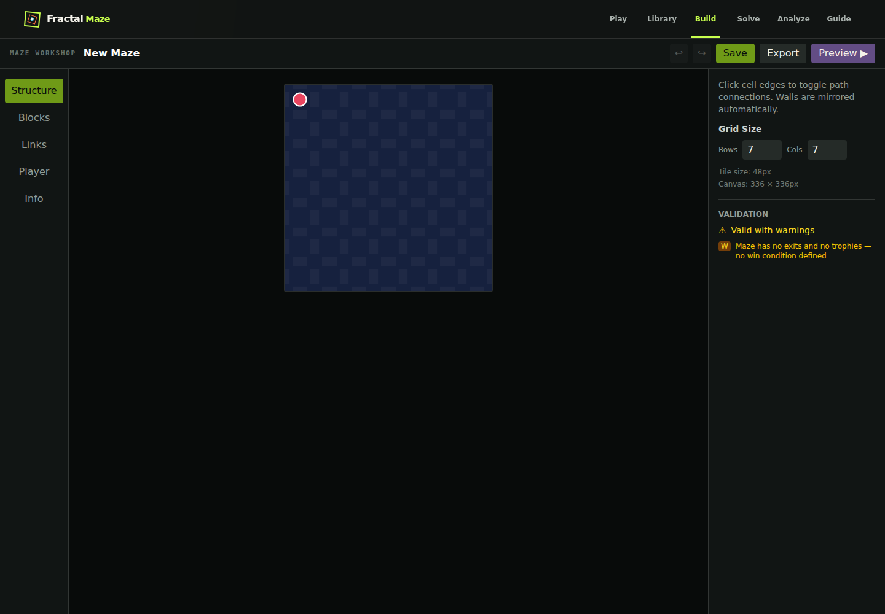
Catalog editing is disconnected The Alice editor URL opens New Maze because editor loading only checks local projects.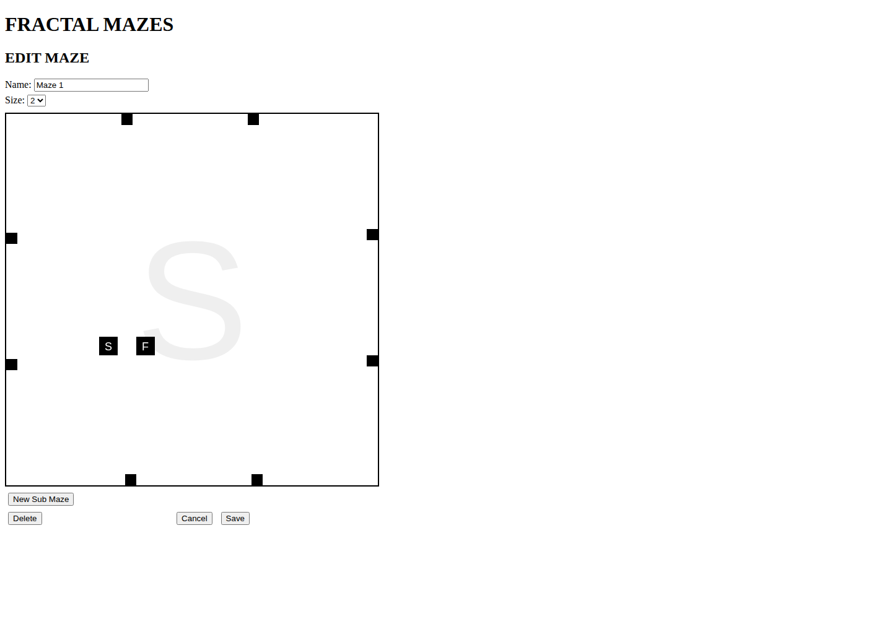
Geometric editing reference Original tools model colored paths and labeled gates directly; the current grid editor models cell connectivity.
All nine Python and custom catalog mazes
The maze called “Block Maze” in the Orel collection still uses the corridor format. It differs from Koteitan's fractal block construction.